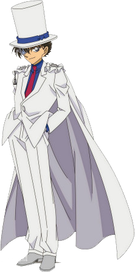

- 40年前，乌丸莲耶杀害了聚集在「黄昏公馆」解读暗号的学者们。
30年前，宫野厚司加入白鸠制药的药物研发团队。
25年的，白鸠制药倒闭，宫野医院开业。
- 20年前，贝尔摩德杀害茱蒂的FBI搜查官父亲。
19年前，宫野夫妻加入乌丸资助的研究所。
18年前，宫野夫妻携女儿明美造访「出岛设计」;赤井务武让家人逃回日本;
宫野夫妻在一场事故中死亡。
- 17年前，羽田浩司被人杀害。赤井务武死亡，遗体失踪;赤井秀一为加入FBI赴美留学。
10年前，工藤新一在沙滩上遇到赤井一家;
5年前，赤井化名诸星大接近宫野明美，成功潜入组织,之后崭露头角，被授予代号「黑麦威士忌」。
本堂瑛海潜入组织，以主持人水无怜奈的身份开始活动。
- 4年前，伊森·本堂自杀，伪装成被水无怜奈杀害;
苏格兰威士忌(诸伏景光)在自己的公安身份暴露后自杀，自此赤井和波本结仇。
3年前，世良真纯和玛丽离开日本前往英国。
2年前，FBI策划的琴酒追捕行动失败。赤井离开组织。龙舌兰接触软件工程师板仓，委托他完成研发中的软件。
-
1年前，贝尔摩德在纽约易容成杀人魔，企图杀害赤井;
从赤井手下逃出后，在仓库街被新一和兰救下一命,伪造莎朗·温亚德死亡的假象。
新一目击到组织的交易现场，被琴酒灌下APTX–4869后变成小孩。